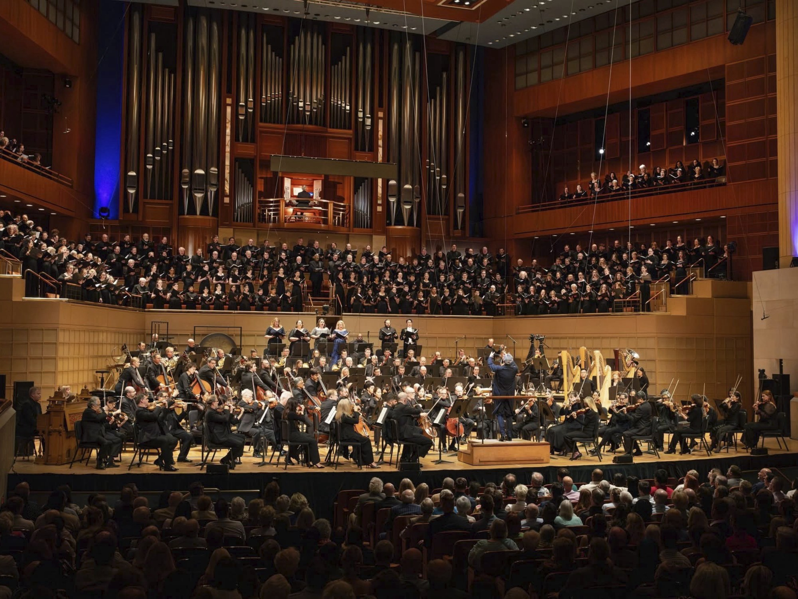

Our Connection to the Dallas Symphony Orchestra
As the official children’s chorus of the Dallas Symphony Orchestra, the DCC gives young singers a rare opportunity to train and perform alongside a world-class orchestra, on the same stage and to the same standard.

A Partnership at the Heart of Our Mission
As the official children’s chorus of the Dallas Symphony Orchestra, DCC choristers have the extraordinary opportunity to perform with one of the nation’s leading orchestras. These experiences challenge young singers to meet the high standards of a world-class orchestra while developing the musicianship, discipline, confidence, and artistry that extend far beyond the concert hall.
This relationship began in 2022, when the Dallas Symphony Orchestra founded the Dallas Symphony Children’s Chorus under the leadership of then-President & CEO Kim Noltemy. Beginning with the 2027/28 season, our chorus becomes the Dallas Children’s Chorus — legally and financially independent, but with the same close artistic relationship with the DSO continuing without interruption.
The DCC is among a small handful of children’s choruses worldwide founded by and directly affiliated with a world-class symphony orchestra. In the United States, the only other major orchestra with its own children’s chorus is The Cleveland Orchestra. This means the performance opportunities afforded to DCC choristers are truly unique.
On Stage With the DSO
Since our founding, DCC choristers have shared the stage with the Dallas Symphony Orchestra on some of the most demanding choral-orchestral works in the repertoire — building a level of musicianship and confidence few young singers ever have the chance to develop.
DSO Christmas Pops
Since its first season, the chorus has performed in the DSO’s annual Christmas Pops concerts, a tradition that continues each year and gives young choristers an early introduction to life on a professional concert stage.
Orff’s Carmina Burana
In its founding season, the chorus performed Orff’s Carmina Burana alongside the DSO and the Dallas Symphony Chorus — one of the most widely performed works in the choral-orchestral repertoire.
World Premiere of Four Poems by Emily Dickinson
The chorus performed the world premiere of Andrea Basevi’s Four Poems by Emily Dickinson with the DSO, giving choristers the rare experience of creating a piece of music for the very first time.
Mahler’s Symphony No. 8
The chorus performed Mahler’s monumental Symphony No. 8 (“Symphony of a Thousand”) with the DSO, the Dallas Symphony Chorus, and the Baltimore Choral Arts Society, singing in both Latin and German — one of the largest and most demanding works a chorus can undertake.
These highlights are only the beginning. As the Dallas Children’s Chorus, our choristers will continue to perform with the orchestra as called for by its programming, connecting rigorous choral education with performance opportunities that would otherwise be unavailable to most young singers.
Give your child a stage like this one.
Auditions are held throughout the year for singers in grades 4–12. No prior experience is required to inquire.